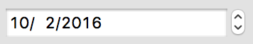
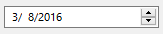
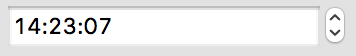
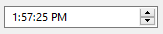
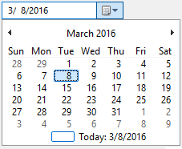

Date & Time Control
A date & time control provides a simple and intuitive interface through which the user can easily select date and time.
A date & time control has two separate areas: the client (display) and the up-down area. The control's client area consists of fields. Each field displays a portion of the date and time information that the control stores internally. The date or time information is displayed in the format based on the settings of the system script (on Macintosh) or of the system locale (on Windows).
The user can click a field to set the keyboard focus and then provide keyboard input to change the information represented by that field. The spin control in the up-down area can also be used to alter the content of the selected field. The control automatically updates internal information based on the user's input.
On Windows, there is a so called calendar type date control, too. A calendar control contains a down arrow instead of the spin control. If the user presses this button a calendar popup appears on which the date can be selected using the mouse or the arrow keys.
Item type
- DG_ITM_DATETIME
Subtypes
-
Subtype Meaning DG_DT_DATE Date control (year, month, day).
 
DG_DT_TIME Time control (hour, minute, second).
 
 Windows only:
Windows only:DG_DT_CALENDAR Calendar control (year, month, day).

GRC Specification
DateControl x y dx dy [Calendar]
TimeControl x y dx dy
where x and y are the pixel coordinates of the upper left corner of the date & time control, dx and dy are the width and height of the control in pixels. On Macintosh, the optional Calendar flag has no effect, the control is always drawn with the DG_DT_DATE subtype.
Possible values of Calendar:
-
Value Meaning Standard Control with the DG_DT_DATE subtype. Standard is the default value. Calendar Control with the DG_DT_CALENDAR subtype (Windows only).
Suggested sizes
For date & time controls the suggested item height is 22 pixels. It is advisable to use this value in GRC or when date & time controls are created from program code.
Messages
-
Message Meaning DG_MSG_CHANGE The date or time information is changed. The message data parameter contains the previous date and time information. DG_MSG_FOCUS The date & time control gains or loses the keyboard focus. The message data is 1 or zero, respectively.
Modification Flag
DGSetItemValLong, DGSetItemMinLong and DGSetItemMaxLong functions can set the date & time control's modification flag except they are called when handling the DG_MSG_INIT message in the dialog callback function. The flag can also be set by user actions that generate DG_MSG_CHANGE messages. Use DGModified or DGResetModified to retrieve or reset (clear) the state of the modification flag.
Remarks
The date and time information is represented in the standard C language system time format (for details see the C Run-Time Libraries Reference of your C/C++ compiler). The system time is different on the two platforms:
- The system time is different on the two platforms:
 Macintosh only:
Macintosh only:- The number of seconds elapsed since January 1, 1904 (0 <= value <= ULONG_MAX).
- Windows only:
- The number of seconds elapsed since January 1, 1970 (0 <= value <= LONG_MAX).
To retrieve the C system time representation of the time information currently displayed in a date & time control call DGGetItemValLong and cast the return value to time_t. A C system time value can be assigned to a date & time control by DGSetItemValLong.
A date & time control can be restricted to show time values that fall into a given time interval only. Use DGSetItemMinLong and DGSetItemMaxLong to define the beginning and the end of the interval. The previously set limit values can be retrieved by DGGetItemMinLong and DGGetItemMaxLong. All these functions work on C system time.
When a date & time control is initialized, its font is automatically set to the large plain font (DG_IS_LARGE | DG_IS_PLAIN). This setting can be modified later by DGSetItemFont. Use DGGetItemFont to retrieve the font currently assigned to a date & time control.
The date & time control is one of the focusable controls of DG. When a date & time control gains or loses the keyboard focus as a result of user actions, the dialog callback function receives a DG_MSG_FOCUS message. The keyboard focus can be set to a date & time control from the program code, too, by DGSetFocus. To retrieve the control that currently has the keyboard focus use DGGetFocus.
The keyboard focus and the focusable control categories in DG essentially have the same meaning as in the Macintosh operating system (i.e. the same type of controls are focusable in DG and on Macintosh). On Windows, however, more controls can have keyboard focus. Focusable controls of DG form a subset of the focusable controls of Windows. The DGSetFocus and DGGetFocus functions work on the focusable controls of DG only.
Requirements
- Version: DG 1.1.0 or later
- Header: DG.h
See Also
Dialog item types
DGGetFocus, DGGetItemFont, DGGetItemMaxLong, DGGetItemMinLong, DGGetItemValLong, DGModified, DGResetModified, DGSetFocus, DGSetItemFont, DGSetItemMaxLong, DGSetItemMinLong, DGSetItemValLong, Callback functions
DG_MSG_CHANGE, DG_MSG_FOCUS, DG_MSG_INIT